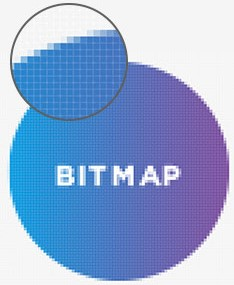

While General-purpose applications are widely used in nearly every profession, specialised applications are used for specific professions or specific purposes. These programs
include graphics programs and web authoring programs.
🟦 Graphics
Graphics are used by professionals in the graphic arts profession. They use desktop publishing programs, image editing programs, illustration programs, and video editors to draw and
edit art.
Desktop publishing programs or page layout programs allow you to combine text and graphics to create publications of professional quality. While word processors focus on
creating text and have the ability to combine text and graphics, desktop publishers focus on page design and layout and provide greater flexibility. Professional graphic artists use
desktop publishing programs to create documents such as brochures, newsletters, newspapers, and textbooks. Popular desktop publishing programs include Adobe InDesign, Microsoft Publisher, Adobe Project ROME, Serif PagePlus, Photo Pos Pro, LyX, HP Photo
Creations, and QuarkXPress. While these programs provide the capability to create text and graphics, typically graphic artists import these elements from other sources, including word
processors, digital cameras, scanners, image editors, illustration programs, and image galleries.

Figure 3-8 Bitmap image.
Figure 3-8 Bitmap image.
Image editors, also known as photo editors, are specialised graphics programs for editing or modifying digital photograph. They are often used to touch up photograph
to remove scratches and other imperfections. This photograph consist of thousands of dots or pixels that form images often referred to as bitmap or raster images.
One limitation of bitmap images, however, is that when they expanded, the images can become pixelated, or jagged on the edges. For example, when the letter A in Figure 3-8 is expanded,
the borders of the letter appear jagged, as indicated by the expanded view. Popular image editors include Adobe Photoshop, Corel PaintShop Pro, GIMP (GNU Image Manipulation Program), Snapseed, Pixlr Express, Prisma, Photo
Editors and Windows Photo Gallery.
Illustration programs, also known as drawing programs, are used to create and edit vector images. While bitmap images use pixels to represent images, vector images,
also known as vector illustration, use geometric shapes or objects. These objects are create by connecting lines and curves avoiding the pixeleted or ragged edges created by bitmap
images, see Figure 3-9. Because these objects can be defined by mathematical equations, they can be rapidly and easily resized, coloured, textured, and manipulated. An image is a combination
of several objects. Illustration programs are often used for graphic design, page layout, and creating sharp artisitc images. Popular illustration programs include Adobe
Illustration, CorelDRAW, and Inkscape.
Video editors are used to edit videos to enhance quality and appearance. Once used only by Hollywood professionals, video editors are now widely used to edit high-quality video
capyured using smartphones and other devices. You can readily add special effects, music tracks, titles, and on-screen graphics. Just a few year ago, video editors were used only by professionals with expensive specialised hardware and software. Now, there are several free on
inexpensive editors designed to assist the amateur videographer. Some well-known video editors are Windows Live Movie Maker, Sony Vegas Pro/Window, Corel VideoStudio, Adobe Premiere Elements,
Adobe Premiere Pro, Apple Final Cut Pro X, and YouTube Video editor. Figure 3-10 displays some of the specialised applications.